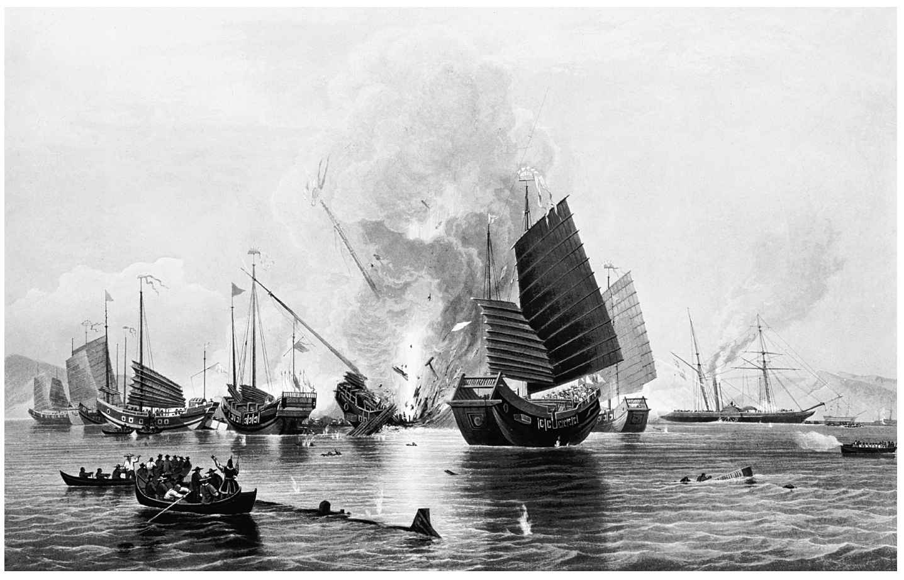
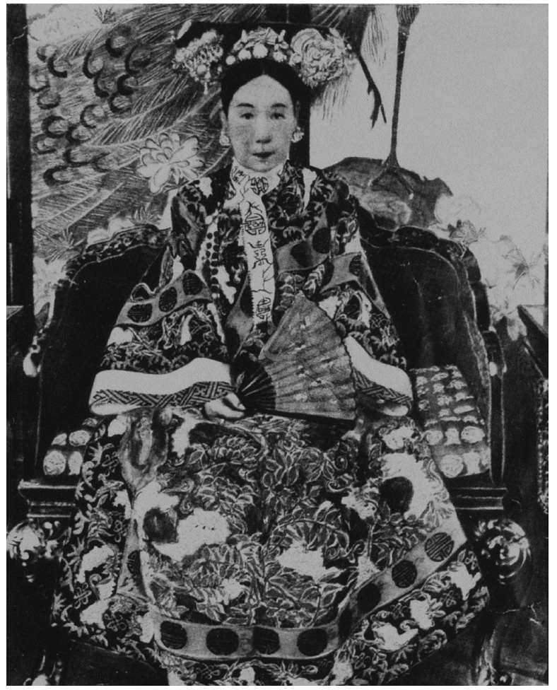

4000多年中，中国人在欧亚大陆的最东端发展起一个独特、自治的社会。这一社会同亚洲其他社会一样，以农业而不是商业为基础，由地主和官僚而不是商人和政治家统治。这一明显以自我为心、自我确信的社会认为世界其他地区都是低等、从属的。
1514年，当葡萄牙人出现在东南附近的海面上时，中国人首次开始同西方的直接交往。继葡萄牙人之后是荷兰人和英国人，他们也是由海路到达中国；而在北面则出现了俄国人，他们是从陆路到达黑龙江流域的。中国人坚决避免同所有这些入侵者亲近（见第十九章第三节），他们将贸易关系限制在少数几个港口，拒绝在完全平等的基础上建立外交关系。
火攻船和猴子
在1842年鸦片战争期间，配备老式武器的中国人没有任何机会打败装备蒸汽炮舰和火炮的英国人。这一点在中国人试图夺回宁波这座城市时得到了证明。英国历史学家阿瑟·韦利利用同时代人的中文资料描写了最终的惨败。*
［中国］将军的参谋机构中有许多文人，在发动进攻（1月30日）的前10天，将军命令他们撰写捷报。他们呈递了30篇文章，将军按其文才大小的顺序进行了排列。第一位归缪嘉毂，他写了一篇详细而生动的有关各种英雄事迹的报道。列在名单上第二位的是何士祁（一位相当有名的书法家），他呈报了一篇文字造诣很高的文章，其中充满了经典的比喻和机敏的措辞。
总攻的信号将是点燃火攻木筏，向英国船只发射过去；火攻木筏漂向英国船只，在它们起锚前将它们点燃……英国舰船上的小艇在这些燃烧着的火攻木筏到达前很久便已出发，将它们击成两半——这是一种难以操作的作战行动，导致几个水手被严重烧伤——然后使它们搁浅。大约几英里外的另一支火攻木筏分遣部队一见到从其他火攻木筏升起的火焰便也提早点火；但是还没等到第二支分遣部队的火攻木筏发出有一半，参战的中国非正规军便遭到了从英国战舰上发出的小艇的进攻，随即他们就逃跑了。
有人建议：应该在一些猴子的背后拴上鞭炮，然后将猴子扔到英国船只的甲板上。受惊的猴子会带着火焰迅速向各个方向逃散开去，此时如果能够碰巧跑到弹药库，那么整艘船都将灰飞烟灭。19只猴子被买了回来，并在进攻前被成群地带到了前沿阵地。在中国人的进攻失败后，它们跟随撤退的军队来到了诸暨。“事实是，”贝青乔说，“没有一个人敢向外国船只靠近到足以将猴子扔到甲板上，所以这一计划也就从未付诸实施。”随后诸暨后防高地的中国残余军队被打败，引发了恐慌，人们纷纷从这座城里逃走了，其中包括负责这些猴子的冯先生。由于没人去照管这些猴子，它们最终都在冯先生废弃的前屋里饿死了。
* A. Waley, The Opium War Through Chinese Eyes（George Allen & Unwin，1958）, pp. 165，169，170.
由于中国人闭关自守、骄傲自满，三次灾难性的战争使他们受到了巨大的刺激：第一次是1840年至1842年同英国的战争，第二次是1856年至1860年同英、法的战争，第三次是1894年至1895年同日本的战争。在这些战争中所遭受到的屈辱性失败，迫使中国人打开大门，结束他们对西方的屈尊态度，重新评价自己的传统文明。其结果是入侵和反入侵的连锁反应；它制造了一个新的中国，所产生的影响至今仍能在远东乃至全球感受到。
英国之所以能率先打开中国的大门，是因为它在印度拥有强大的基地，并控制着诸海洋。英国的主要目的是要除去中国设在经商道路上的无数障碍。促使中、英两国交战的直接问题是鸦片贸易。17世纪，欧洲水手将吸鸦片的恶习传入中国，这一恶习便从各港口迅速蔓延开去。中国人对鸦片的需求解决了英国支付中国产品的货款问题。在此之前，英国人一向不得不支付黄金和白银，因为中国人对西方的商品很少感兴趣。但现在，鸦片市场完全改变了贸易平衡，而对英国人有利。清政府曾于1729年和1799年颁布法令，禁止鸦片进口，但这一贸易非常有利可图，以致中国官员接受贿赂，允许走私。

图221 1840年的鸦片战争。中国的武装帆船根本不是英国炮舰的对手。这场战争以1842年《南京条约》的签订而告终。
当中国人试图强行禁止鸦片交易时，便爆发了第一次中英战争，即通常所称的鸦片战争。道光皇帝任命林则徐为钦差大臣，事实证明他是一个坚定正直的人。林则徐查封了2万箱价值600万美元的鸦片，并当众予以销毁。这一举动引起的纠纷导致了中国战船与英国战舰的冲突；1840年6月，战争爆发了。以后的战争进程清楚地表明了中国人毫无希望的军事劣势。英中两国的力量差距比西班牙征服者和阿兹特克人之间的力量差距还要大得多。16世纪至19世纪期间，欧洲的军舰和大炮已得到巨大发展，而中国人的军事技术仍停留在比阿兹特克人的技术高不了多少的水平上。1842年，清政府宣布投降，接受了《南京条约》，这是后来蚕食中国大部分主权的一系列众多不平等条约中的第一个。
按照《南京条约》，中国将香港岛割让给英国，并开放五个对外通商口岸。《南京条约》并未结束中国人和欧洲人之间的摩擦。为增加贸易量，欧洲人想要更多的让步，而中国人则认为，这些条约向欧洲人承认的特权太多。因此，毫不奇怪，1856年战争再次爆发了。这次战争的起因是中国官员关押了一艘悬挂英国国旗的中国船只上的中国水手。当清政府拒绝释放这些水手时，英国人炮轰了广州城。法国人以一位法国牧师被杀为借口，也加入了这次战争。英法联军不可抵挡，中国人被迫在1858年与1860年签订了更多的不平等条约。

图222 慈禧太后（1835—1908年）在北京的清廷里操纵着中国的权杖。
中国遭受的第三次失败是最为屈辱的，因为这次是败在邻近小国日本的手下。在本章的后半部分我们将看到，日本人和中国人大不相同，他们已有能力使西方技术适应他们的需要，建立一支有效的军事力量。在达到其他东方国家当时所不能达到的水平之后，日本便迫使朝鲜接受一些内容不十分明确的要求，而中国也声称对朝鲜拥有宗主权。双方军队发生冲突，1894年8月，中日双方正式宣战。中国军队又轻易被击溃，1895年4月，北京被迫接受了《马关条约》。条约的条款要求中国赔款，承认朝鲜独立，割让一些领土给日本。
日本人的战争给中国的傲慢和自满以毁灭性的打击。这个大帝国在受轻视的、配备以现代战争武器的邻国面前显得十分无能。而且，早几年，欧洲列强趁中国衰弱之际，吞并了传统上承认北京宗主权的边远地区。除获得这些领土外，西方国家还划分了中国本土。它们建立了“势力范围”，在这些势力范围内，列强的政治和经济优先权得到承认。这样，云南和印度支那边境地区变成了法国的势力范围，广东、长江流域和这两者之间的广大地区是英国的势力范围，东北地区、山东和福建分别成为俄国、德国和日本的势力范围。
19世纪后半叶中国所经受的屈辱和灾难使传统的以自我为中心的清王朝进行了痛苦的自我反省和重新组织。下面我们将沿着这一过程的轨迹，看看中国人是怎样缓慢、勉强地进行改革和革命的。